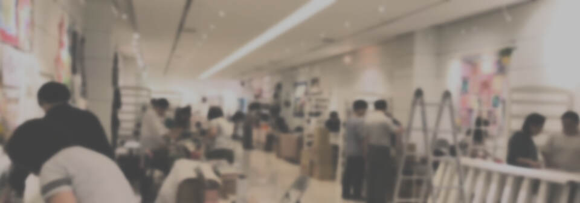

2019 友好拼布手作節
Curatorial Team & Volunteers策展工作小組及志工
Curatorial Team
策展及工作小組成員
【2019 友好拼布手作節】的策展及工作小組成員都是台灣國際拼布友好會的會員，每一位都是來自台灣各地的拼布同好或是忙於教學的拼布老師，尤其是策展小組成員只能用自己工作之餘的短短時光，不時地熬夜籌劃討論，為整合資源在台灣南北奔走，都明白唯有將手緊緊牽在一起，才能實現共同的理想。
或許在你看來這是一腔孤勇，但我們知道我們有多麼深愛台灣這片土地，以及心心念念的拼布對我們有多重要！我們的家在這裡，如果不努力，只想自掃門前雪，又何以為繼？揣懷著滿腔澎湃熱血，就算是無給職，無法各個都討好，仍舊義無反顧投入這場資源甚少的大展裡，我們只想在有限的生命裡，盡所有可能行所當行，為所當為！
【2019 友好拼布手作節】不是只有單純的作品展，而是集結拼布比賽、國內外作品邀展、拼布市集、名師現場教學等豐富內容的完整拼布展，這就是我們長久以來想要有的拼布展的理想模樣！活動內容非常多，所以我們非常重視有您的參與，期待能與您一同為共同的夢想踏實前進！
【2019 友好拼布手作節】不是臨時起意，而是醞釀多時，企劃案雖只寫了一兩個月，實際活動能量卻已是醞釀三十年，因為拼布在台發展三十年，我們終於要向前跨出一大步了！請讓我們的熱血感染成你的行動，一起為更好的未來努力！
Team Members
策展及工作小組
Volunteer Recruitment
徵求 展場活動志工
【2019友好拼布手作節】即將在12月10號的<名師工作坊>課程活動開始，陸續展開直到12月15日！
整整六天的活動，需要很多熱血志工一起投入展場各項任務，在會場除了需執行志工工作外，能免費欣賞作品，並可在現場見到很多久聞其名的老師或遇見網路上交流過的拼布同好，所有志工都是【2019友好拼布手作節】的友好親善大使喔！
志工的工作非常重要！懇請同好們邀請親朋好友一起來，我們需要您的熱情，請加入志工的行列！
- 志工需持工作證入場，展前將由小組組長召集說明任務及調度。
- 急需具有英語、日文、韓文溝通能力的志工，請以 e-mail 報名。
- 登記志工後，皆需視人數安排調度，工作內容可能與您當初登記不同，還請配合調整。
- 若有登記當志工的任何問題，比如需要幫忙登記，敬請聯繫下方策展工作小組。
期待能與您一起見證台灣第一次的拼布盛會在台北松菸！謝謝您！
Volunteer Registration
報名參加志工
原活動頁於 2019 年提供線上志工報名表，欄位包含姓名、電子郵件，以及「我可以當志工的時間及其他意見」。因本活動已結束，此處不再提供可送出的報名表，以避免使用者誤以為目前仍可報名。
Event Information
活動資訊